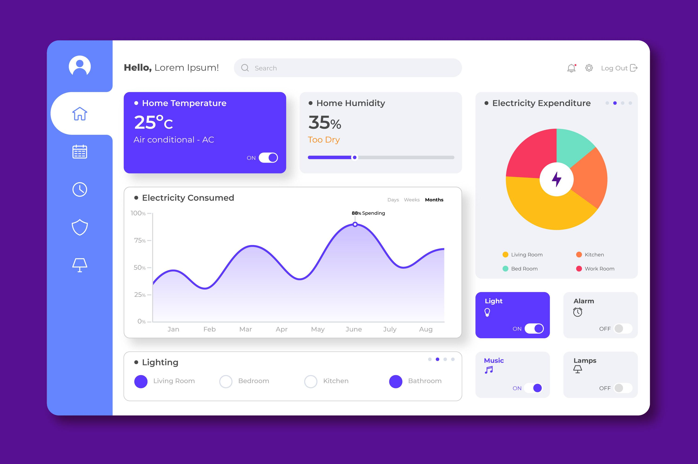

Gain valuable insights into your social media data with our comprehensive analytics dashboard. Track engagement, growth, and more to optimize your social media strategy.
Explore Dashboard Monitor your key social media metrics in real-time. Understand what's working and what's not.
Dive deep into your audience demographics and behavior. Learn who your followers are and what they like.
Generate detailed reports on your social media performance. Share insights with your team and stakeholders.
Use data-driven insights to refine your social media strategy and achieve better results.